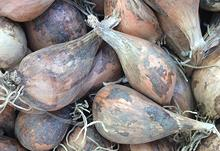
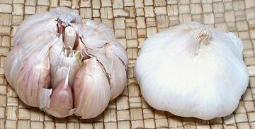
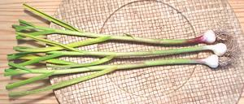

SAFARI
Users
- General & History
- Working with Onions
- Varieties
- Bulb Onions - with definition of terms, etc.
- Sweet Onions
- Scallions / Green Onions - Spring Onions (UK)
- Shallots
- Garlic
- Leeks
- Chives - Resolving confusion.
- Other Alliums - Ramps; Ransons, Chinese, Welsh, Egyptian and Canadian Onions, etc
- Health & Nutrition
General and History
Alliums are Monocots, and originally classified as "Lilies" (class Liliopsida) but the APG (Angiosperm Phylogeny Group) really upset that applecart. They now belong to Order Asparagales (Asparagus Order), along with many other former "Lilys". Alliums come in a wide variety and grow in nearly every region of the Northern Hemisphere, and a few in South America and tropical Africa.
Religious Considerations
All Alliums are forbidden to Jains, as well as some sects and classes among the Hindus and some Buddhists. In North America the Hari Krishna sect says that is because odors of the breath offend Lord Krishna, but in India it is because they are suspected of raising passion and "inspiring to lust". For this reason they are traditionally forbidden to monks and widows (the many unfair restrictions on widows in India are starting to fade). These sects and classes use Asafoetida to provide a similar sulphurous sophistication to their recipes. Perhaps asparagus should be banned too, for causing odors of the pee? After all, onions are members of the Asparagus order.
Muslims are strongly discouraged from eating garlic raw, and are forbidden to pray at a mosque if they have recently done so. Muslims are allowed to eat garlic if they have cooked it long enough to deodorize it. Muhammad is on record as disliking the eating of garlic.
In Europe garlic is considered protective against vampires, werewolves and demons, and against monsters in the Philippines.
Bulb Onions
The common Onions (Allium cepa var cepa) are one of the most important agricultural crops in the world, and were probably one of the very first. They are considered important medicinals for various ailments, are highly nutritious, store well, and are particularly important to the flavor of the majority of recipes in the world. They are prepared in many ways, using techniques tailored to specific recipes, but take care - screw up the onions for your dinner recipe and you might as well send out for pizza.
These onions probably originated in Western Asia. It is certain they were being cultivated in the Mediterranean region, particularly Egypt, at least 5000 years ago. They were soon grown in India (though banned by some religious factions there) and were finally carried to China, where they are unpopular and called "Foreigh Garlic". The word "foreign" in Chinese dialects implies "inferior". The Chinese do use some very large Scallions - see Welsh Onions.
The ancient world had only a few varieties of onion, but today hundreds of cultivars have been developed for specific purposes, regions, and month of maturity. As with so many fruit and vegetable varieties now grown worldwide, many important varieties were developed in California, which grows more than 25% of the U.S. onion crop. Texas is also a significant developer, particularly of sweet onions.
Specific cultivars are of little culinary interest but are absolutely critical to onion growers. For instance, onions start to bulb at a specific day length. The wrong cultivar for a latitude may never bulb or it may bulb too soon, resulting in undersize onions. Classifications of culinary interest are:
Size
The National Onion Association defines a medium onion to be 5 ounces. Onions that small are hard to find in Southern California onion bins, so I, and some other cooks, prefer a 6 ounce onion, which produces 1-cup chopped small.Size Weight Chopped Small 4 oz - 5 oz 1/2 cup Medium 5 oz - 7 oz 1 cup Large 7 oz - 10 oz 1-1/2 cup Color
- White are preferred in Mexican cuisine and by onion processors. The flavor is simpler (cleaner) but they are pretty much interchangeable with yellow onions for cooking
- Yellow are the standard onion found everywhere. They come in "sweet" and "storage" varieties and in many sizes.
- Brown is a controversial classification among onion experts. For culinary purposes it's just another name for yellow.
- Red onions are popular sliced in salads for their attractive color pattern but they may stain some cooked dishes. They are the standard cooking onion in much of India and Southeast Asia, along with Shallots.
Sweet vs. Storage
- Sweet Onions have a high water content and are lower in the sulphur compounds that make onions strong. Mildness and relatively large size make them the darling of the fast food hamburger trade, and for onion rings. See Sweet Onions below.
- Storage Onions are your common supermarket varieties, red, white and yellow. They come in a range of sizes from grape to melon and are drier and relatively strong compared to sweet onions. Keeping properties are much better than for sweet onions - weeks to months depending on season. See Onions below.
Scallion / Green Onion
- [UK Spring Onion] - Scallions are onions that never produce a bulb or are harvested before they start to form a bulb. The leaves taper from white at the base to deep green over most of their length. Some cultivars that would bulb in northern regions can be grown as scallions farther south. For details see Scallions.Shape
Shape has no effect on strength and flavor but can be critical to culinary textures.- Flattened Globe onions are particularly attractive for slicing for hamburgers or for onion rings, as the shape maximizes yield and uniformity.
- Elongated onions are preferable for slicing lengthwise into wedges for stir frying and such.
Yellow Onion[Brown Onion, Spanish Onion (most of North America), Storage Onion]
This is the most common onion in North America and generally the lowest
cost. They vary in size from less than 4 ounces to well over 1 pound, and
in color from greenish yellow to as dark as the photo specimens, depending
on variety (there's an ideal variety for every growing region) and length
of storage. The largest of the photo specimens was 3-5/8 inches diameter
and weighed over 11 ounces. In cooking it can be used interchangeably
with white and red onions, but salads and salsas are more fussy.
Red Onion[Spanish Onion (New York and New Jersey only), Purple Onion (Europe, parts)] Popular raw in salads, these globe shaped onions have relatively thick layers and thicker dried skins. When cooked most of the color is lost, but they are the most popular onion for cooking on the east coast of India. They are preferred for growing in some regions because they're more resistant to blight than yellow or white onions. When caramelized this onion goes quite dark and a bit sticky, but has good onion flavor. Of the photo specimens, the big one with leaves was 5-1/2 inches in diameter and weighed 2 pounds 3-1/4 ounces. The regular ones were 2-7/8 inches in diameter and weighed 6-7/8 ounces. White OnionThese offer a slightly cleaner, simpler flavor than regular yellow onions but with the same onion bite. Mexican recipes always call for white onions which are traditional there, and for some applications the clean white color is desirable. For cooking there really isn't a noticeable difference between the two, so substitute yellow onions if you don't have white. Of the photo specimens, the big one with leaves was 4-1/2 inches diameter and weighed 2 pounds 2-1/8 ounces. The regular ones were 2-7/8 inches diameter and weighed 7 ounces. Bermuda OnionAn extinct variety of yellow onion (RIP 1985). Spanish Onions are sometimes mistakenly called Bermuda Onions. Cipolline OnionThese are a traditional Italian onion. They are somewhat sweeter than yellow onions, and much less tear producing. Small ones are often roasted over charcoal on a long skewer interspaced with chunks of meat. They are rather disk shaped with the largest from the photo batch 2.6 inches diameter and 1.2 inches high. The batch varied in size from 2.0 to 2.6 inches, with an average weight of 1-3/4 ounces. Purchased from a large multi-ethnic market in Los Angeles (Altadena) for 2021 US $0.69 / pound. Spanish OnionProperly, this is a spherical yellow onion variety midway between sweet and storage onions. With a water content higher than storage onions they aren't as durable but will last longer than sweet onions. Unfortunately the term "Spanish Onion" has been degraded to mean regular non-sweet yellow onions in most of North America, but in New York and New Jersey it means red onions. In the UK it means a mild white onion. In Spain, onions are all Cebollas, which may be Nueva if freshly picked or Roja if red, nothing more. "Pearl Onion"[Allium cepa]
These are not true Pearl Onions, which are a variety
of leek, but what passes as commercial pearl onions today. They are made
small by using a special variety and overcrowding in the field. These are
more economical to grow because real pearl onions take two years to
mature. They are easy to tell apart, as these are layered like other
onions, while the real ones are a single stem base.
Sweet OnionsThese are the darling of the hamburger stand. Unusually mild because of low sulphur and high water content, they are suited to be the raw onions for the mass market. Many varieties are rather large so they make hamburger size slices, and some varieties are rather flat, maximizing the number of large slices or rings from each onion. Most North American varieties of sweet onion were developed in Texas, starting with Bermuda onion seeds from the Canary Islands. These were selected and hybridized in various ways. Some varieties cannot propagate but have to be planted from seeds specially produced by seed growers from two varieties.
Scallion / Green Onion [Spring Onion (UK); Allium cepa]
[Spring Onion (UK); Allium cepa]
Scallions are onions of varieties carefully chosen to not bulb before they
reach harvest size. Generally, in the markets they are cut to about 13
inches long from the base of the bulb, but the photo specimens were
untrimmed and were up to 34 inches long. Recipes calling for "3 scallions"
are highly imprecise because scallions sold in North America vary from 1/4
inch to 7/8 inch diameter at the bulb end. Figure a standard scallion is
5/8 inch at the bulb and 13 inches long - adjust for the size you have on
hand.
Scallion / Green Onion - Large[Welsh Onion, Chinese / Korean Scallion; Japanese Bunching Onion; Dae-Pa (Korea); Negi (Japan); Escallion (Jamaica); Allium fistulosum] These don't quite belong here, being a different species, but this is probably where people will look for them. They are shown with a medium regular scallion for comparison. This is the traditional Onion of China. Some Chinese even today won't use bulb onions because they are "Foreign" (lit. foreign garlic). In Chinese dialects, "foreign" is a synonym for "inferior". Bulb Onions were brought to China from India, possibly over 2000 years ago, but certainly by Europeans 500 years ago. The photo specimens have been trimmed to 15-1/2 inches, and are 1.1 inches diameter. These were purchased from a Korean market in Los Angeles (La Cañada) for 2021 US $1.99 for the pair. Korean markets carry them fairly frequently. Mexican Onion[Summer Onion; Allium cepa]
These are very similar to scallions, but the variety is selected to bulb.
They are picked when the bulbs reach about 3/4 inch diameter. The largest
of the photo specimens was 7/8 inch diameter. These are very fresh
onions, and both the bulbs and leaves may be used.
|
 Varieties of sweet onion grown in Vidalia Georgia that have been
marketed intensely and very successfully. Formerly available only in
the spring, some are now stored in an oxygen free environment and
released in the fall. Because of their high water content they cannot
be stored for a long period.
Varieties of sweet onion grown in Vidalia Georgia that have been
marketed intensely and very successfully. Formerly available only in
the spring, some are now stored in an oxygen free environment and
released in the fall. Because of their high water content they cannot
be stored for a long period.
Shallots
The name "Shallot" is used for several small Allium species, but here in North America it generally means a variety of the Allium cepa species. To add confusion, in Australia the name may also refer to Scallions, with "eschalot" specific to the shallots described here. English speakers in Quebec, Canada also use "shallot" for Scallions.
Shallots[Échalote (France); Scalogno (Italy); Bawang merah kecil (Malay); Hom (Thai); Katem kror hom (Cambodia); Small onion, Kanda, Gandana, Pyaaz, Gundhun, Cheriya ulli, Chuvanna ulli, Chinna vengayam, Sambar vengayam, Praan (India); Allium cepa var. aggregatum, formerly Allium ascalonicum,] Shallots have long been a "gourmet" item in the U.S. mostly imported from France and sold at around 2004 US $6.99 / pound, but this has changed. In California (where large quantities are now grown), produce markets have them as low as 2014 US $1.99 (though you can still pay a lot more in supermarkets and gourmet outlets). This has been brought about by the large and growing Indian and Southeast Asian populations here. Shallots are every day items in those regions, and have become so here. Shallots are very important in many cuisines, so they have their own Details and Cooking page. Banana Shallots[Échalion (France); Allium cepa var. aggregatum] These are primarily grown in France, but also used in England. The
specimens in the photo to the left were grown in France, and were
typically 4-3/4 inches long and 1-1/8 diameter.
Details and Cooking.
Persian Shallot [Moo-Seer (Persia); Allium stipitatum]
[Moo-Seer (Persia); Allium stipitatum]
These shallots are found wild from Turkey to Kyrgyzstan, but
are not found in our markets. Some are cultivated, but most are
gathered wild in the mountains of Iran, sliced and dried before
selling in the marketplaces. They are often used to flavor yogurt.
Photo by Ram! contributed to the Public Domain.
Details and Cooking.
French Grey Shallot [True Shallot; Griselle (French); Allium oschaninii] These shallots are found wild from Turkey to Kyrgyzstan. They are cultivated in France, but are not native there. Some are grown by specialty growers in North America, particularly by growers of exotic garlics. They are tear shaped and small, compared to regular European shallots, about 1-1/2 x 1 inches. Photo borrowed from produce distributor Freshpoint under fair use (small, non-competitive, non-commercial, otherwise unavailable). . |
Garlic
Garlic (Allium Sativum) is probably native to Central Asia, but has been in cultivation for well over 7000 years. It was already in common use in Egypt during the building of the pyramids. Today it is indispensable in nearly all cuisines of the Western Hemisphere, and has been carried to the New World by the Spanish, French and Portuguese. Of course, certain sects and classes in India are forbidden to use it as explained above.
There are many varieties of garlic with differing characteristics (see Note O2). Unfortunately the only garlic available in most of our markets is a single variety grown in China.
Raw garlic can cause unpleasant smelling breath and sweat when consumed. This is not a problem when garlic is cooked as it becomes mild and sweet, even if a whole lot of it is included in a recipe. Unfortunately, cooking seriously reduces its medicinal properties.
Garlic has been used as a powerful medicinal for thousands of years
and over most of the Western world. It is used to treat bronchitis,
high blood pressure, hardening of the arteries tuberculosis, liver
disorders, dysentery, flatulence, colic, intestinal worms, rheumatism,
diabetes, fevers, and is thought to have anti-cancer properties. Modern
research indicates little effect with normal culinary consumption, so
garlic extracts are suggested.
Garlic - Heads & Cloves Of the many varieties of garlic, there are two basic types: Hardneck (left in photo) and Softneck (right in photo). The hardneck type has large, rather separate cloves, while the softneck has tight cloves with a lot of very small ones near the center. Softneck is grown by the Chinese and others who do bulk production because it is more durable in storage, while small growers often grow hardneck garlic because it is otherwise a more desirable product and popular with shoppers at farmer's markets. As a garlic plant matures, it develops multiple centers and then splits into segments called "cloves", which will later sprout as separate plants. A group of cloves under a single wrapper constitutes a "head" of garlic. When a recipe calls for a "clove of garlic" it means the large outer cloves of the head. These should be at least 1-1/4 inches long and 5/8 inch wide, weighing at least 6 to the ounce. You can use several inner cloves to make up the same weight. Garlic cloves may begin to sprout, forming a green shoot in the center. Many writers say these sprouts have a more pungent taste than the rest of the clove and recoommend removing them. This is not so - careful testing has show it is the cloves themselves that are more pungent, not the sprouts. A garlic clove old enough to start to sprout has lost water, some of it to the sprout itself, so its pungency has become more concentrated. Chinese GarlicIn times past, nearly all garlic sold in North America was grown in Gilroy, California. Today, most of our markets carry only a single variety grown in vast quantity in China. While I find Gilroy garlic superior, it is difficult to find even here in California. Chinese garlic exporters have been convicted under U.S. unfair trade laws. In response, the Chinese set up garlic companies, export huge amounts at artificially low prices, then close the company before U.S. regulators can respond. The day they close one company they reopen under another name, often in the same building. Rinse and repeat. For these reasons, when possible (it's seasonal) I buy my garlic at Certified Farmer's Markets, where I can be sure it's locally grown, relatively fresh, complies with U.S. trade laws and doesn't contain any weird chemicals used to make it grow faster. Trader Joe's is my alternate source as they sell garlic labeled "Product of USA". Elephant GarlicNot a garlic - see Leeks. Fresh GarlicThis is fresh garlic of a large cloving variety, purchased at a big farmer's market in Pasadena, California in early June. The largest head was 2-7/8 inch diameter. Pearl Garlic [Solo Garlic, Single Clove Garlic, Yunan Garlic]
This is a single bulb variety of garlic which does not split into
cloves. Both bulbs and stalks can be used. It originates from the
Yunan provence of China and is sometimes found in the big Asian
markets here in Los Angeles. The photo specimens were
14-1/2 inches long with bulbs just over 7/8 inch diameter.
Thai Pickled Garlic[Kratiem Dong (Thai) | Ka Thiem Dog (Thai - the pickling juice)] Pickled Garlic is a much used ingredient in Thailand. Thai garlic
is in smaller heads than what we see in North America, with a larger
number of much smaller cloves. Typical heads are about 1-1/2 inch
diameter, and they are often pickled as whole heads. These cloves (and
often the pickle juice) are used in recipes and as a condiment.
Typically, Garlic, Water, Distilled Vinegar, Sugar, Salt, Sodium
Benzoate (0.05%). It can also be easily made at home.
Details and Cooking.
Field Garlic[Wild Garlic; Allium oleraceum]
This perennial wild garlic is native to to most of Europe with
separate populations in Turkey and the Caucasus. It grows stalks up
to 31 inches tall. The photo specimens are pickled stalks from Armenia,
one of the many fresh and pickled herbs that appear on the Armenian
herb plate at dinner. They have a pleasant light but definite herbal
garlic taste. They are up to 11 inches long and 0.32 inch diameter.
Ing: Wild Garlic Spears, Water, Citric Acid, Salt. Purchased from a
multi-ethnic market in Los Angeles (Sunland) for 2018 US $5.95 for
a 26 ounce jar.
|
Leeks
Leeks (Allium ampeloprasum) originated in southeastern Europe and/or western Asia, but it is certain they were used as food in ancient Egypt at least 4000 years ago, probably much earlier. They were carried as far as the British Isles in prehistoric times, where they are essential to the cuisine of Wales.
Common Leek[Allium ampeloprasum var. porrum]
This is the leek commonly found in North America in practically every
supermarket, produce market, farmer's market and produce stand. For
culinary purposes a "medium leek" is cut to 13 inches long (excluding
roots) and weighs about 9 ounces with a root end about 1.6 inches
diameter. Prepared for use it will weigh about 5-3/4 ounces. The photo
shows a leek as marketed and as prepared for use in cooking.
Details and Cooking.
Taiwan Leek [Allium ampeloprasum var. ???]
[Allium ampeloprasum var. ???]
These leeks are now grown in California and appear in the Asian markets
here. They are much smaller than the common leek with bulbs up to 1.5
inches diameter and shafts about 0.83 inch diameter. They were cut to
the same standard 13 inch length (not counting roots) used for Common
Leeks sent to market. Preparation and usage is pretty much the same as
for the common leek.
Elephant Garlic[Allium ampeloprasum var. ampeloprasum]
Elephant Garlic looks like a giant garlic head, tastes a lot like
garlic, can be used in place of garlic, but it's not actually garlic -
it's a leek. The flavor is milder than real garlic and some people
prefer that, especially when it is included raw, such as in salads and
salad dressings. Young flower heads can also be cooked as a vegetable.
The photo specimen, shown with two large cloves of regular garlic in
front, was 3-1/2 inches in diameter and weighed 6-3/8 ounces. Some
sources relate Elephant Garlic to Giant Russian Garlic, but that is
not correct. Giant Russian is actually garlic.
Kurrat[Allium ampeloprasum var. kurrat]
This leek is very popular in the Levant and North Africa, particularly
Egypt where it has been cultivated for a few thousand years. It is
mainly used as greens. You can see from the photo the greens have been
cut off before, and the plant is about ready for cutting again. The
photo specimens are growing near Alexandria, Egypt.
Photo © AUB (American University of Beirut),
permission granted for non-commercial use.
Tarah Chives [Tara, Tarah (Persian); Allium ampeloprasum var.
persicum]
[Tara, Tarah (Persian); Allium ampeloprasum var.
persicum]
This is what is sold as "chives" in many Southern California produce
markets. particularly those serving significant Middle Eastern
communities. They are actually a leek green. They are wider and a bit
firmer and stronger in taste than Garlic Chives.
Pearl Onion[Allium ampeloprasum var. sectivum]
True pearl onions were once grown commercially, but are now mostly
grown in home gardens, mainly for pickling, and are popular in
northern Europe. Commercial "pearl onions" are generally regular
onions made tiny by overcrowding in the field. Real pearl onions
have only one layer, not multiple layers like a regular onion.
They have fallen out of favor commercially because they take 2 years
to form a mature bulb.
Photo © Raimond Spekking (cropped) distributed
under license Creative Commons
Attribution-ShareAlike 3.0 Unported via Wikimedia Commons,
attribution required.
|
Chives
There are a number of rather different members of the Onion family sold
as "Chives", usually without modifiers, so it's a bit confusing. To
straighten this out, and to provide an easy link from recipes, they now
have their own Chives page.
Other Alliums
Most experts admit to about 750 species of alliums, but some say more, and some say less. Aside from the few of wide culinary use (listed above), there are others of lesser or regional use.
Chinese Onion[Vietnamese leek, Chinese Scallion, Japanese Scallion; Cu Kieu (Viet); rakkyo (Japan); Jiaotou, Xie (China); Allium chinense]
This plant is found wild and cultivated throughout East and Southeast
Asia, including Japan, Mongolia and eastern Russia. It is now also
cultivated to some extent in Cuba, California and Hawaii. While both
greens (tubular, like scallions) and bulbs are usable fresh, the bulbs
are most noted for being pickled (as in the photo). These pickles are
particularly popular in Vietnam and Japan, especially to accompany
spicy curries (yes, Japanese curry, adopted from the British Navy
during the Meiji period). The photo specimens were purchased from a
large Asian market in Los Angeles (San Gabriel) where they are sold
from a bulk tub, but are also available in jars. They are a very
enjoyable mild pickle.
Ramps[Wild Leek, Ail des bois (French), Allium tricoccum] Ramps are native to the Appalachian mountain chain from South Carolina north into Canada. They are particularly popular in West Virginia and Quebec, Canada. Both the scallion like bulbs and the leaves are eaten and they are described as being like a combination of onion and garlic. Very seasona1, they are available only from late winter through early spring. Photo © i0127 . While there are ramp festivals in Virginia and West Virginia and restaurants there serve them in season, in most of the country they are available only through gourmet outlets at absurd prices. Commercial production is experimental and seems to work only in a forest setting. Protective laws are in place in Quebec where ramps cannot be sold
or handled commercially, but poachers sneak them across the border
into Ontario to sell to restaurants.
Ramsons[Buckrams, Wild garlic, Broad-leaved garlic, Wood garlic, Bear leek, Bear's garlic; Allium ursinum]
This plant, related to Chives, is widely distributed across Europe,
including the British Isles. It is usually gathered in the wild, but
every year there are cases of poisoning from mistaking Lily of the
Valley, Autumn Crocus or Arum Lily for Ramsons. At early stages of
growth these may resemble Ramsons. The bulbs and flowers are edible,
but it is mainly the leaves that are used, in salads, as an herb or
as a cooked vegetable and in soups. In Russia, flower stems are
preserved in salt and eaten as a salad. In Armenia, stems are pickled
in brine for use on appetizer platers (right photo). Leaves are used
as wrappers when making some versions of Cornish Yarg cheese. The
leaves are used to make pesto in regions deficient in basil.
Photo by Sony Mavica distributed under license Creative
Commons
Attribution-ShareAlike 3.0 Unported.
Welsh Onion[Chinese / Korean Scallion; Japanese Bunching Onion; Dae-Pa (Korea); Negi (Japan); Escallion (Jamaica); Allium fistulosum] This onion is native to Siberia or northern China. The name does not indicate origin, or even popularity in Wales. It comes from the Old German "welsche", meaning foreign, having come from the far northeast. These have hollow leaves like common onions (A. Cepa) but also have large hollow scapes (flower stalks) and never form a bulb. They can withstand frost, but not a hard freeze. In the West these are used mainly as Scallions, but in much of
China they are the main cooking onion, instead of regular bulb onions.
Those are considered "foreign", and in Chinese dialects "foreign" is a
synonym for "inferior". Bulb onions were probably brought to China
from India 2000 years ago, but certainly were brought there by
Europeans before 1600 - Chinese xenophobia has a long memory. The
photo specimens were purchased from a Korean market in Los Angeles.
The longest was 24 inches (not counting roots) and just over 1 inch
diameter at the white end. Even larger varieties are grown in China.
Egyptian Onion[Tree Onions, Topsetting Onions, Walking Onions; Allium x proliferum]
This onion has been genetically identified as a cross between Common
Onion (A. cepa) and the Welsh Onion (A. fistulosum).
The common English name, Egyptian Onion, is a complete misnomer, as
these have never been popular in Egypt. They are now thought to have
been brought from India by Romani people. The bulblets range in size
from less than 1/4 inch to about 1-1/8 inch diameter. They leaf and
grow at the top of the scape (flower stalk) until it falls down,
after which they root where they fell. The larger bulblets are often
pickled, while the smaller are used in soups and the like.
Photo by H. Zell distributed under license Creative
Commons
Attribution-ShareAlike 3.0 Unported.
Prairie Onion[Wild Onion, Wild Garlic, Drummond's Onion; Allium drummondii]
This onion is native to North America from the plains of South Texas
west into California. It continues to be gathered and use as food by
American Indians throughout that region, usually as an addition to
meat dishes, but in California often as a main dish. It contains a
significant amount of inulin, an indigestible fart producing sugar,
so it is usually given a long cooking time to break the inulin down
into simpler sugars. This plant can be quite invasive in more fertile
regions.
Photo by Abbamouse (cropped) distributed under
license Creative Commons
Attribution-ShareAlike 2.0 Generic.
Canadian Onion[Wild Onion, Wild Garlic, Meadow Garlic, Canadian Garlic; Allium canadense]
This onion is native to North America from New Brunswick, Canada, to
Florida and west to Montana and eastern Texas. It has been naturalized
in Cuba where it is now grown in home gardens for culinary use. The
bulbs are small and covered by a tough fibrous skin, but the flavor
is very onion-like. It was formerly gathered by American Indians and
early European settlers for use in cooking, but it's safety has been
questioned. It can cause gastric problems in small children, reduces
iodine takeup by the thyroid gland and poisons livestock, sometimes
fatally.
Photo by George F Mayfield (cropped) distributed under
license Creative Commons
Attribution-ShareAlike 2.0 Generic.
Three Cornered Leek[Wild garlic; Allium triquetrum]
This plant is native to southwest Europe, northwestern Africa and the
Island of Madeira and the Canary Islands. It has been introduced to
British Isles, New Zealand, Turkey, Australia, California, Oregon,
and South America. It is easily identified by its shallow "V" shaped
leaves and its scapes (flower stalks) which are concavely triangular.
All parts of the plant are edible raw or cooked, tasting similar to
leeks or scallions. The leaves are used to make pesto in regions
deficient in basil.
Photo by Meneerke Bloem distributed under license Creative
Commons
Attribution-ShareAlike 3.0 Unported.
Few Flowered Leek[Allium paradoxum]
This plant is native to the mountains of the Caucasus and Iran. It is
considered highly invasive, forming mats that smother native plants,
so it is illegal to plant it in the wild in some regions. It is easily
identified by its long flat leaves and its scapes (flower stalks)
which are triangular. It's flower heads usually are almost all
bulblets, often with just one white flower. All parts of the plant
are edible raw or cooked, tasting similar to leeks or scallions. The
leaves are used to make pesto in regions deficient in basil.
Photo by Botaurus contributed to the Public Domain"
.
Nodding Onion[Lady's Leek; Allium triquetrum]
This plant is native to much of North America, including Canada, from
Ontario west through British Columbia. In the United States it is
found in the Appalachian Mountains, the Great Lakes Region, the Ohio
and Tennessee River Valleys, the Ozarks and the Rocky and Cascade
Mountains from Mexico to Washington, but not in California. It is
easily identified by its grass-like leaves and its scapes (flower
stalks) which bend downwards at the flower heads. This plant does not
produce bulblets in the flower heads. All parts of the plant are
edible, and are usually cooked as ingredients due to their strong
onion flavor.
Photo by Fritzflohrreynolds distributed under license
Creative Commons
Attribution-ShareAlike 3.0 Unported.
|
Health & Nutrition
General:
The commonly eaten Alliums are safe to eat in any quantity you are likely to consume. They are low in sodium, free from fats and cholesterol and contain a pretty good mix if vitamins and minerals, particularly sulphur, which is deficient in many people's diets.Preparing:
The outer layers of Onions and Shallots are higher in some important nutrients, so you should peel off the minimum amount of layers. If you are going to fry the onions until browned, you may have to peel one layer deeper to get even browning. For complete details of see our Working with Onions page.Tears:
When damaged, the cells of Onions, Shallots and some other Alliums release enzymes which combine with sulphur compounds to produce propanethiol S-oxide vapors. When these reach the moisture in your eyes they form Sulphuric Acid, which stings, causing increase in tear production to wash it away. The intensity of this effect depends on how much sulphur was in the ground the plants were grown in, and how badly the bulb is damaged. It helps if the bulbs are refrigerated before cutting. To minimize damage use a very thin, razor sharp knife like a Santoku.Medicinal:
Onions, garlic and leeks have played an important role in traditional medicine and healing since before the dawn of history. Both internal and topical applications have been common. Today they are being studied for their anti-cancer properties, in hopes varieties can be developed particularly high in these cancer fighting elements.Other characteristics being studied are the ability of onions to lower blood pressure, control blood clotting, reduce blood cholesterol and improve the ratio of "good" to "bad" cholesterol. Anti-bacterial characteristics are also gaining attention, particularly for fighting drug resistant bacteria.
Diabetes & Sugars:
Onions contain a modest amount of sugars and have a very low glycemic index. Sugar content is 9.93 grams per cup (210 grams). This consists of 30% Fructose, 47% Glucose, 23% Sucrose.Vampires:
Garlic is reputed to repel vampires, a characteristic important to the health of any person set upon by them. This has not been confirmed by controlled scientific studies. No such studies have been conducted due to insufficient numbers of vampires volunteering to participate. Garlic is also said to be effective against Demons and Werewolves. In the Philippines, it is reputed to drive off monsters.Links
- O1: Onions and Cancer - Cornell University.
- O2: Varieties of Garlic - We Grow Garlic - Wisconsin.
- O3: Onion Nutrition and Medicinal - The World's Healthiest Foods.